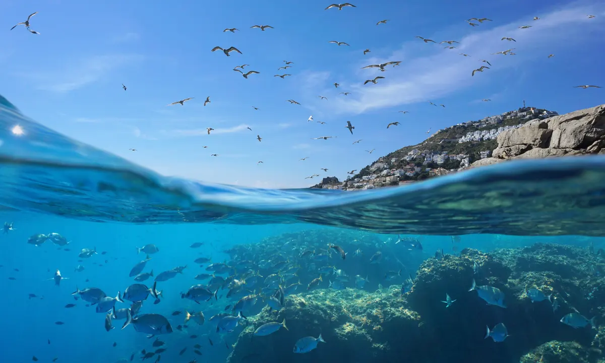

Ocean (also the sea or the world ocean) is the body of salt water that covers approximately 70.8% of the surface of Earth and contains 97% of Earth's water.[1] An ocean can also refer to any of the large bodies of water into which the world ocean is conventionally divided.[2] Separate names are used to identify five different areas of the ocean: Pacific (the largest), Atlantic, Indian, Southern (Antarctic), and Arctic (the smallest).[3][4] Seawater covers approximately 361,000,000 km2 (139,000,000 sq mi) of the planet. The ocean is the principal component of Earth's hydrosphere, and therefore integral to life on Earth. Acting as a huge heat reservoir,the ocean influences climate and weather patterns, the carbon cycle, and the water cycle.
Oceanographers divide the ocean into different vertical and horizontal zones based on physical and biological conditions. The pelagic zone consists of the water column from surface to ocean floor throughout the open ocean. The water column is further categorized in other zones depending on depth and on how much light is present. The photic zone includes water from the surface to a depth of 1% of the surface light (about 200 m in the open ocean),where photosynthesis can occur. This makes the photic zone the most biodiverse. Photosynthesis by plants and microscopic algae (free floating phytoplankton) creates organic matter using light, water, carbon dioxide, and nutrients. Ocean photosynthesis creates 50% of the oxygen in earth's atmosphere.[5] This upper sunlit zone is the origin of the food supply which sustains most of the ocean ecosystem. Light only penetrates to a depth of a few hundred meters; the remaining ocean below is cold and dark. The continental shelf where the ocean approaches dry land is more shallow, with a depth of a few hundred meters or less. Human activity has a greater impact on the continental shelf.
Click Here to watch the full episode of Netflix's "Our Planet"
Ocean temperatures depend on the amount of solar radiation reaching the ocean surface. In the tropics, surface temperatures can rise to over 30 °C (86 °F). Near the poles where sea ice forms, the temperature in equilibrium is about −2 °C (28 °F). Deep ocean temperature is between −2 °C (28 °F) and 5 °C (41 °F) in all parts of the ocean.[6] Water continuously circulates in the oceans creating ocean currents. These directed movements of seawater are generated by forces acting upon the water, including temperature differences, atmospheric circulation (wind), the Coriolis effect and differences in salinity.[7] Tidal currents originate from tides, while surface currents are caused by wind and waves. Major ocean currents include the Gulf Stream, Kuroshio Current, Agulhas Current and Antarctic Circumpolar Current. Collectively, currents move enormous amounts of water and heat around the globe. This circulation significantly impacts global climate and the uptake and redistribution of pollutants such as carbon dioxide by moving these contaminants from the surface into the deep ocean.
Click HERE to find out how Oceans got their names!
Please do yourself a favor by checking out my other web page as listed below.
Chickens